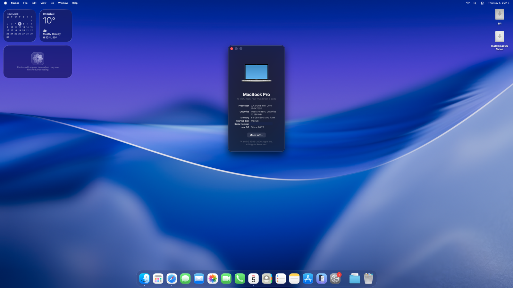
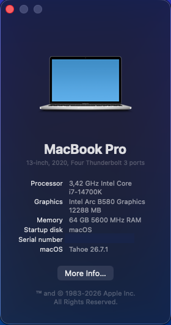
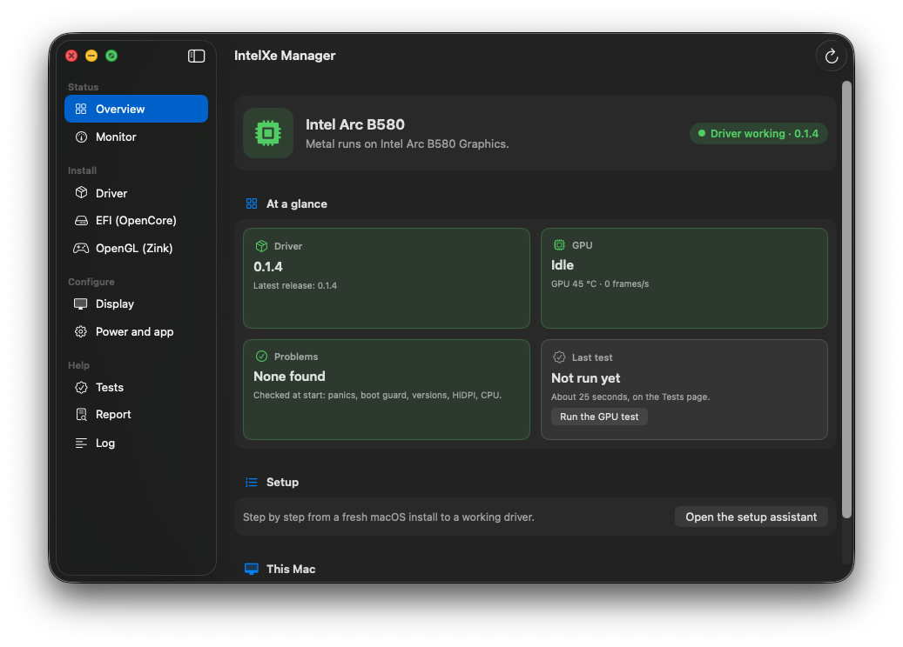
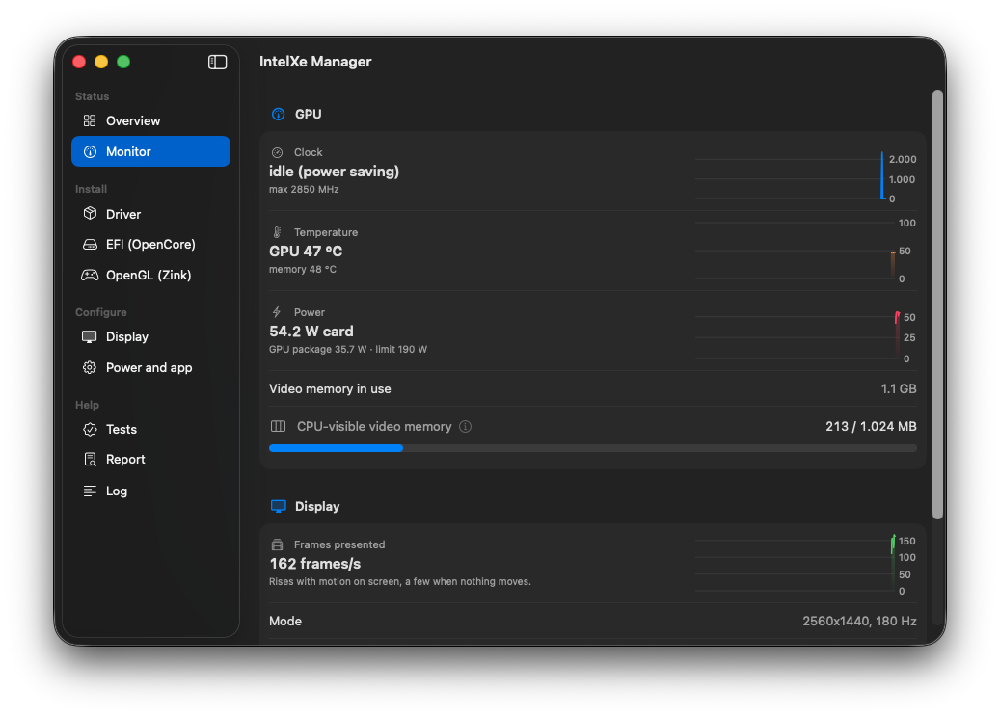
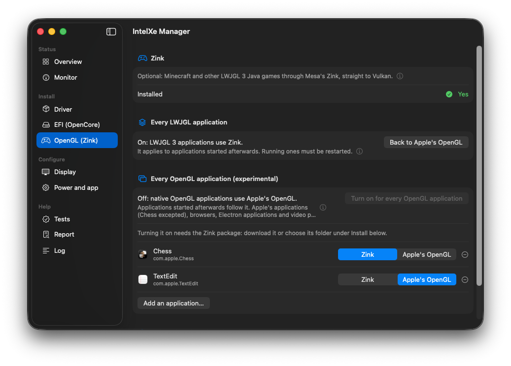
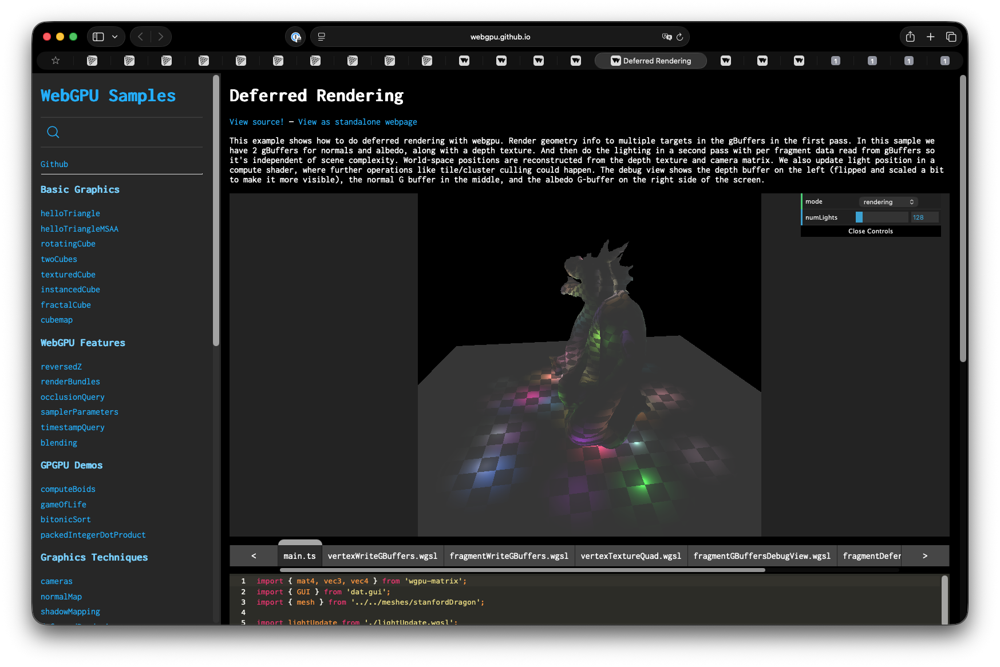

Your Intel Arc card,
running macOS.Intel Arc kartınız,
macOS'ta çalışıyor.
A Metal driver for the Arc B580 and B570 on macOS 26 Tahoe. It brings the GPU up the way Linux's xe driver does, runs Mesa's Vulkan driver on top and implements Metal on Vulkan: the desktop, Metal apps and games, Safari with WebGPU and hardware video run on the card.
macOS 26 Tahoe'da Arc B580 ve B570 için bir Metal sürücüsü. GPU'yu Linux'un xe sürücüsü gibi ayağa kaldırıyor, üstünde Mesa'nın Vulkan sürücüsünü çalıştırıyor ve Metal'i Vulkan üzerinde gerçekleştiriyor: masaüstü, Metal uygulamaları ve oyunlar, WebGPU'lu Safari ve donanım videosu kartta çalışıyor.
Tested on one PC with one Arc B580. Keep a USB stick with a working OpenCore EFI before you try it.Tek bir PC'de, tek bir Arc B580 ile test edildi. Denemeden önce çalışan bir OpenCore EFI'yi USB bellekte hazır tutun.


A real driver, not a shim.Gerçek bir sürücü, yama değil.
Everything below runs on the card on macOS 26.7.1.Aşağıdakilerin hepsi macOS 26.7.1'de kartta çalışıyor.
The desktopMasaüstü
WindowServer composites on the GPU with real page flips: transparency, blur and animations accelerated. All modes of one DisplayPort monitor, VRR, HiDPI, hardware cursor, sleep and wake.WindowServer gerçek sayfa çevirmeleriyle GPU'da birleştiriyor: saydamlık, bulanıklık ve animasyonlar hızlandırılmış. Tek DisplayPort monitörün bütün modları, VRR, HiDPI, donanım imleci, uyku ve uyanma.
Metal
Apps, Chrome and games; the Metal 3 feature set including ray tracing. Translated shaders are cached on disk and survive reboots and driver updates.Uygulamalar, Chrome ve oyunlar; ışın izleme dahil Metal 3 özellik seti. Çevrilen gölgelendiriciler diskte saklanıyor; yeniden başlatma ve sürücü güncellemesinden sonra da duruyor.
Safari and WebGPUSafari ve WebGPU
Safari on the GPU, with WebGPU: the webgpu-samples and three.js pages draw, and a sweep of 41 WebGPU features passes 40 (WebKit does not offer the 41st, timestamps, on Intel GPUs).Safari GPU'da, WebGPU ile: webgpu-samples ve three.js sayfaları çiziyor; 41 WebGPU özelliğini deneyen tarama 40'ını geçiyor (41.'si zaman damgaları; WebKit onu Intel GPU'larda sunmuyor).
Hardware videoDonanım videosu
VideoToolbox decoders for H.264, HEVC, AV1 and VP9 and encoders for H.264, HEVC and AV1 on the card, for QuickTime, OBS, HandBrake and ffmpeg.Kartta H.264, HEVC, AV1 ve VP9 için VideoToolbox çözücüleri; H.264, HEVC ve AV1 için kodlayıcılar. QuickTime, OBS, HandBrake ve ffmpeg bunları kullanıyor.
OpenGL through ZinkZink üzerinden OpenGL
Minecraft Java and other LWJGL games through Mesa's Zink straight to Vulkan (1400–1500 fps without shaders, against 700–1000 on Windows); native OpenGL apps as an experimental switch.Minecraft Java ve diğer LWJGL oyunları Mesa'nın Zink'i ile doğrudan Vulkan'a (shader'sız 1400–1500 fps; Windows'ta 700–1000); yerel OpenGL uygulamaları deneysel bir anahtarla.
Recovers from hangsTakılmadan toparlanma
A hung job resets only its engine; the desktop keeps running. A boot guard falls back to safe settings after failed boots.Takılan bir iş yalnızca kendi motorunu sıfırlıyor; masaüstü çalışmaya devam ediyor. Bir açılış koruması, başarısız açılışlardan sonra güvenli ayarlara dönüyor.
Hybrid Intel CPUsHibrit Intel işlemciler
HybridPM.kext lets macOS run the P-cores of 12th–14th gen CPUs at full clock, which makes the driver's CPU work, and so the GPU, faster.HybridPM.kext, macOS'un 12.–14. nesil işlemcilerin P çekirdeklerini tam hızda çalıştırmasını sağlıyor; sürücünün işlemci işi, dolayısıyla GPU da hızlanıyor.
Signed releasesİmzalı sürümler
Each release's list of checksums is signed with the project's key; the app installs a download only when the signature checks out.Her sürümün sağlama listesi projenin anahtarıyla imzalı; uygulama indirdiği bir sürümü yalnızca imza doğrulanınca kuruyor.
From a fresh install to a tested driver.Temiz kurulumdan test edilmiş sürücüye.
A setup assistant walks through every stage, shows each change before it asks for your password, backs up and can undo. Then it stays useful: a Monitor page, GPU tests, Safari, Zink, HiDPI and diagnostics reports.Bir kurulum yardımcısı her aşamada yol gösteriyor; parola istemeden önce her değişikliği gösteriyor, yedek alıyor ve geri alabiliyor. Sonra da işe yarıyor: İzleme sayfası, GPU testleri, Safari, Zink, HiDPI ve tanı raporları.




The same card, the same PC.Aynı kart, aynı PC.
| Windows (Intel) | macOS (this driverbu sürücü) | |
|---|---|---|
| Geekbench 7 GPU | Vulkan 111 056 · OpenCL 108 544 | Metal 95.7k · OpenCL 85.5k |
| Video decode up to 4K4K'ya kadar video çözme | referencereferans | bit-exact and fasterbit bit aynı ve daha hızlı |
| Encode quality against Intel QSVIntel QSV'ye göre kodlama kalitesi | referencereferans | better for HEVC and AV1; H.264 within 1.5%HEVC ve AV1'de daha iyi; H.264 %1,5 içinde |
| Minecraft Java, Sodium + Iris + BSLMinecraft Java, Sodium + Iris + BSL | 214–218 fps | 197–205 fps (Zink) |
| The same without a shader packShader paketi olmadan | 700–1000 fps | 1400–1500 fps (Zink) |
Measured on one PC (Z790, i7-14700K, Arc B580). Full tables in the repository.Tek bir PC'de ölçüldü (Z790, i7-14700K, Arc B580). Tüm tablolar depoda.
What you need.Neye ihtiyacınız var.
- A PC that OpenCore boots macOS on: Intel CPU, Above 4G decoding and Resizable BAR on.OpenCore ile macOS açabilen bir PC: Intel işlemci, Above 4G decoding ve Resizable BAR açık.
- An Arc B580 or B570 with one monitor on its DisplayPort. The B570 is supported but untested by us.Bir Arc B580 ya da B570 ve DisplayPort'una takılı tek monitör. B570 destekleniyor ama bizim tarafımızda test edilmedi.
- macOS 26 Tahoe (tested on 26.7.1). macOS 15 Sequoia is built from the same sources, not re-tested.macOS 26 Tahoe (26.7.1'de test edildi). macOS 15 Sequoia aynı kaynaktan derleniyor, yeniden test edilmedi.
- A USB stick with a working OpenCore EFI, and your firmware's boot-menu key.Çalışan bir OpenCore EFI'si olan USB bellek ve anakartınızın açılış menüsü tuşu.
- Any computer with Windows, Linux or macOS to prepare it. No Mac is needed; no integrated GPU either.Hazırlamak için Windows, Linux ya da macOS'lu herhangi bir bilgisayar. Mac gerekmiyor; dahili GPU da gerekmiyor.
Four stages.Dört aşama.
Install macOS with a plain OpenCore EFIDüz bir OpenCore EFI ile macOS'u kurunDortania
Build the EFI for your board as Dortania's guide describes; the test machine's sample is in the repository. The installer runs on the card's firmware output, slow but working.EFI'yi anakartınız için Dortania rehberindeki gibi hazırlayın; test makinesinin örneği depoda. Kurulum, kartın firmware çıkışında çalışır: yavaş ama çalışıyor.
Prepare OpenCoreOpenCore'u hazırlayınapp or Windowsuygulama ya da Windows
Relaxed SIP, the AMFI boot-arg, two quirks and one console setting in config.plist. IntelXe Manager does it in the EFI you booted from; IntelXe-EFI.ps1 does it from Windows. Restart.config.plist'te gevşetilmiş SIP, AMFI boot-arg'ı, iki quirk ve bir konsol ayarı. IntelXe Manager bunu açtığınız EFI'de yapıyor; Windows'tan IntelXe-EFI.ps1 yapıyor. Yeniden başlatın.
Install the driverSürücüyü kurunIntelXe Manager
The app downloads the package for your macOS, checks the release's signature, backs up what it replaces and installs it. Do not restart yet.Uygulama macOS'unuza uygun paketi indiriyor, sürümün imzasını denetliyor, değiştirdiklerini yedekliyor ve kuruyor. Henüz yeniden başlatmayın.
Add the kext to the EFI and restartKext'i EFI'ye ekleyin ve yeniden başlatınIntelXe Manager
IntelXe.kext and SSDT-ARCOFF, the table adapted to your card's ACPI path (and HybridPM.kext on a 12th–14th gen hybrid CPU). After the restart the desktop moves at your monitor's refresh rate.IntelXe.kext ve kartınızın ACPI yoluna uyarlanmış SSDT-ARCOFF (12.–14. nesil hibrit işlemcide HybridPM.kext de). Yeniden başlattıktan sonra masaüstü monitörünüzün yenileme hızında akıyor.
The full install guideTam kurulum rehberi (İngilizce) Türkçe rehber
What is not there yet.Henüz olmayanlar.
1 GB of 12 GB is CPU-visible12 GB'ın 1 GB'ı CPU'ya açık
macOS cannot map a larger BAR. The driver keeps that window for what needs it, but many GPU-heavy apps at once can still fill it; the app's Monitor page shows how full it is.macOS daha büyük bir BAR'ı eşleyemiyor. Sürücü bu pencereyi ihtiyacı olana ayırıyor, ama çok sayıda GPU'yu yoğun kullanan uygulama yine de doldurabilir; uygulamanın İzleme sayfası doluluğu gösteriyor.
One monitorTek monitör
One DisplayPort monitor on the card; a second display is not supported yet.Kartta tek DisplayPort monitör; ikinci ekran henüz desteklenmiyor.
Relaxed securityGevşetilmiş güvenlik
Unsigned kexts need relaxed SIP and AMFI, and Safari on the GPU needs a copy of the driver on the system volume (a macOS update removes it; the app notices and can put it back).İmzasız kext'ler gevşetilmiş SIP ve AMFI istiyor; GPU'da Safari için sürücünün sistem diskinde bir kopyası gerekiyor (macOS güncellemesi onu siliyor; uygulama bunu fark edip geri koyabiliyor).
After loginGirişten sonra
The first seconds after login are less smooth than later, and the login screen shows a light grey band after a restart.Girişten sonraki ilk saniyeler sonrasından daha az akıcı; yeniden başlattıktan sonra giriş ekranında açık gri bir şerit görünüyor.
Some speed held backBiraz hız geride tutuluyor
Two faster options are opt-in until they have run longer unattended: direct submission (Geekbench Metal 97.2k, OpenCL 92.9k) and the GuC low-latency hint.İki hızlı seçenek uzun süre gözetimsiz çalışana kadar isteğe bağlı: doğrudan gönderim (Geekbench Metal 97,2k, OpenCL 92,9k) ve GuC düşük gecikme ipucu.
Tested on one machineTek makinede test edildi
One PC, one B580. The B570 and the Windows EFI tool on a PC that then boots are untested: reports are welcome.Tek PC, tek B580. B570 ve Windows EFI aracının hazırladığı EFI ile gerçek bir açılış test edilmedi: raporlarınızı bekliyoruz.
Questions, answered.Sorular, yanıtlar.
Is this an official Intel or Apple driver?Bu resmi bir Intel ya da Apple sürücüsü mü?
No. It is an independent project, not affiliated with Intel, Apple or NullMoth Systems.Hayır. Bağımsız bir proje; Intel, Apple ya da NullMoth Systems ile bağlantısı yok.
Will my Arc A-series card or integrated graphics work?Arc A serisi kartım ya da dahili grafik çalışır mı?
Not yet. Only the B580 and the B570 are supported. The kernel driver already describes the other families the way Linux does, and the repository lists what each one still needs.Henüz değil. Yalnızca B580 ve B570 destekleniyor. Çekirdek sürücü diğer aileleri Linux'taki gibi tanımlıyor; depoda her birinin neye ihtiyaç duyduğu listeli.
Does it work on Apple silicon Macs?Apple silicon Mac'lerde çalışır mı?
No: Apple silicon Macs cannot take a PCIe GPU. This is for x86_64 PCs with OpenCore.Hayır: Apple silicon Mac'lere PCIe GPU takılamıyor. Bu, OpenCore'lu x86_64 PC'ler için.
Is it safe?Güvenli mi?
It changes how your PC boots macOS and needs relaxed security. Every change is backed up and can be undone, and a boot guard falls back to safe settings, but keep a USB stick with a working EFI.PC'nizin macOS'u nasıl açtığını değiştiriyor ve gevşetilmiş güvenlik istiyor. Her değişiklik yedekleniyor ve geri alınabiliyor, bir açılış koruması da güvenli ayarlara dönüyor; yine de çalışan bir EFI'yi USB bellekte tutun.
Do I need Windows or a Mac to install it?Kurmak için Windows ya da Mac gerekir mi?
No. Any computer can prepare the OpenCore EFI; after macOS is installed, IntelXe Manager does the rest on the PC. On Windows, IntelXe-EFI.ps1 can make the EFI changes too.Hayır. OpenCore EFI'sini herhangi bir bilgisayar hazırlayabilir; macOS kurulduktan sonra gerisini IntelXe Manager PC'de yapıyor. Windows'ta EFI değişikliklerini IntelXe-EFI.ps1 da yapabiliyor.
How was it made?Nasıl yapıldı?
With AI assistance: the code (the kernel driver, the changes to nullmoth and Mesa, the tools and the documentation) was written by Anthropic's Claude under the direction of the maintainer, who tests every build on the real hardware. The code it builds on (nullmoth, Mesa, Linux, FFmpeg) keeps its original authors.Yapay zekâ desteğiyle: kod (çekirdek sürücü, nullmoth ve Mesa değişiklikleri, araçlar ve belgeler) her derlemeyi gerçek donanımda test eden proje sahibinin yönlendirmesiyle Anthropic'in Claude modeli tarafından yazıldı. Üzerine kurulduğu kod (nullmoth, Mesa, Linux, FFmpeg) kendi yazarlarına ait.
Can I use it commercially?Ticari olarak kullanabilir miyim?
No. Our own code is MIT, but the parts derived from nullmoth are under the PolyForm Noncommercial License, so the driver as a whole is for noncommercial use.Hayır. Kendi kodumuz MIT, ama nullmoth'tan türeyen parçalar PolyForm Noncommercial lisansında; bu yüzden sürücünün bütünü ticari olmayan kullanım için.
ReleaseSürüm 0.1.4
Start with the app: it downloads the right package for your macOS itself.Uygulamayla başlayın: macOS'unuza uygun paketi kendisi indiriyor.
IntelXe Manager
The app: setup assistant, install, EFI, updates. macOS on the PC.Uygulama: kurulum yardımcısı, kurulum, EFI, güncellemeler. PC'deki macOS'ta.
4.4 MB intel-gpu-macos-driver-0.1.4-tahoe.zipDriver for TahoeTahoe için sürücü
Everything for macOS 26, with install.sh and efi.sh for Terminal.macOS 26 için her şey; Terminal için install.sh ve efi.sh ile.
124 MB intel-gpu-macos-driver-0.1.4-efi.zipOpenCore piecesOpenCore parçaları
IntelXe.kext, SSDT-ARCOFF, HybridPM.kext and the Windows EFI tool. Any system.IntelXe.kext, SSDT-ARCOFF, HybridPM.kext ve Windows EFI aracı. Her sistemde.
676 KB intel-gpu-macos-driver-0.1.4-zink-gl.zipOpenGL through ZinkZink üzerinden OpenGL
Optional: Minecraft Java and other LWJGL games, native OpenGL apps.İsteğe bağlı: Minecraft Java ve diğer LWJGL oyunları, yerel OpenGL uygulamaları.
5.9 MB.sha256) and their signature (.sha256.sig). To check the signature by hand:
Sürüm sayfasında ayrıca: macOS 15 Sequoia paketi, sağlama toplamları (.sha256) ve imzaları (.sha256.sig). İmzayı elle denetlemek için:
swift release/signing.swift verify PZGslAxn39LtMGgkWHbn9MzK8nc+IeM2TrvJpbifZXA= \
intel-gpu-macos-driver-0.1.4.sha256 intel-gpu-macos-driver-0.1.4.sha256.sig